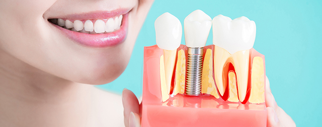
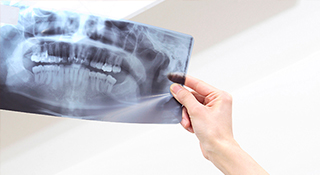
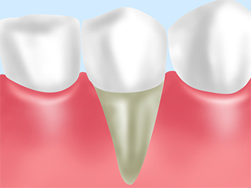
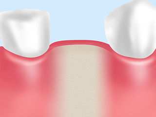
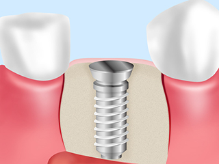
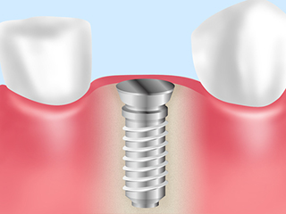
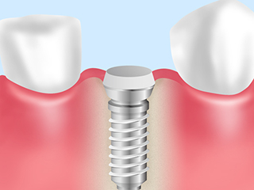
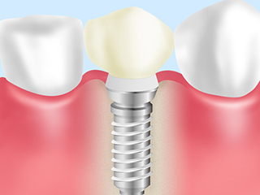

Implantインプラント
自然な噛み心地を得られる～インプラント治療～

歯を失ってしまった際、機能を補う方法としては、となりの歯を削り支台にして、連結した人工歯を装着する「ブリッジ治療」と、取り外し可能な「入れ歯治療」、そして顎の骨に人工歯根（インプラント）を埋め込む「インプラント治療」があります。
インプラント治療とは、生体親和性の高いチタン製でつくられた「インプラント」を外科手術で埋め込んだ後、被せ物や特殊な入れ歯を用いて歯の機能を補う治療法です。
千葉県南柏の歯医者「さかいね歯科クリニック」では、精密な診断が可能になる歯科用CTを活用するとともに、衛生管理を徹底した診療室にて安心のインプラント治療をご提供しています。
インプラントのメリット・デメリット
| メリット | デメリット |
|---|---|
|
|
治療前に歯科用CTで精密な検査を行います

インプラント治療では、顎の骨にインプラント（人工歯根）を埋め込む外科手術が必要なため、安全性を考え治療前に綿密な治療計画を立てる必要があります。顎の骨の状態や、血管・神経の位置を正確に把握して、どの位置にどのようにインプラントを埋入するかを決めるのは非常に大切です。
当院では、歯科用CTを活用し、お口まわりの精密な情報を3次元的な立体画像で確認しています。医科用CTは横になった状態で撮影しますが、歯科用CTは座ったまま撮影しますので、顎の位置を自然な状態で把握できます。また、撮影時間も医科用CTに比べて短く、その分、被ばく線量も8分の1～50分の1と少ないため、体にやさしい検査といえるでしょう。
インプラント治療の流れ
インプラント治療で一般的なのは「2回法」と呼ばれる手法です。これは歯肉の切開を2回行うため、そう呼ばれています。手術後に傷口の治癒期間をおく必要があるため、治療に時間がかかりますが、インプラントがしっかり顎の骨に安定してくれる方法です。こちらでは、2回法の治療の流れをご紹介します。
※表は左右にスクロールして確認することができます。
| STEP1 | STEP2 | STEP3 |
|---|---|---|
|
 麻酔後、歯肉を切開して顎の骨を露出させます。 |
 インプラントを埋め込むための穴を開けます。 |
 インプラントを埋め込み、歯肉を縫合します。 |
| STEP4 | STEP5 | STEP6 |
|
 インプラントが顎の骨に結合するのを待ちます。 |
 インプラントが安定してから歯肉を切開して結合部分を装着します。 |
 歯肉の治癒を確認したら、結合部分に被せ物を装着します。 |